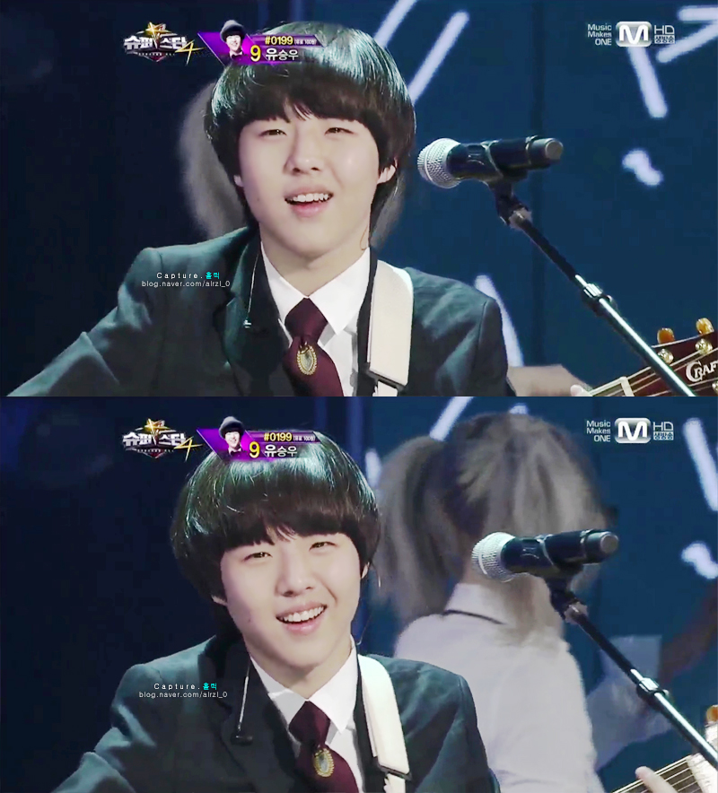

유승우(1997년 2월 26일~)는 대한민국의 가수이다. 2012년 《슈퍼스타K 4》에 참가해 TOP6까지 올랐다 2013년 5월 첫 번째 EP 앨범 《첫 번째 소풍》을 발매하며 데뷔했다.
충청남도 천안시 성환읍 출신. 1997년 2월 26일 생으로 빠른년생이다. 그래서 대부분의 친구들은 1997년생들이 아닌 1996년생들이다. 사족으로 왼손잡이라고 한다. 혈액형은 O형, 외동. 원래는 성환고등학교에 재학 중이었으나, 슈스케 출연 후 서울실용음악학교 보컬과로 편입하였다.